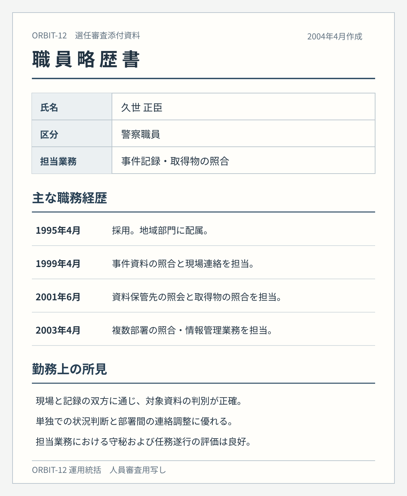

INTERNAL DECISION
ORBIT-12 VEIL-001 実行担当選任決議書
試験運用における実行役の選任と本人説明方針
決議内容
ORBIT-12の試験運用にあたり、警察内部の職員である久世正臣を、VEIL-001／怪盗マーキュリーの実行担当として選任する。現場では素性を伏せ、指定対象への接近と持出しを行わせる。
選任理由
久世は現場対応と記録照合の双方に精通し、対象への接近、資料の判別、離脱経路の判断を一人で遂行できる。過去の担当案件では守秘と状況判断の評価が高く、試験運用の実行担当に適任と判断した。
本人への説明方針
久世には、通常の手続では保全が間に合わない被害関係資料を、人を守るために回収する非公開任務だと説明する。怪盗マーキュリーの名義で活動することは伝えるが、指定資産の移送先、実際の回収理由、事件後の捜査記録の調整については知らせない。
任務への疑問が示された場合は、対象案件の保全上の必要性を説明し、計画の全体像には言及しない。
実行担当案件の追加指定
試験運用の継続に伴い、選任後、次の三件を順次追加指定した。いずれも久世を実行担当とし、対象ごとに本人へ伝える回収理由を別途定める。
2007年10月6日 中央区・美術品保管施設
施設が保管する保全媒体を指定し、原本を持ち出させる。媒体には、美術品の移動経緯と本部関係者の照会履歴が残っている可能性がある。久世には、被害者の申告内容を裏づける資料が失われる前に保護する任務だと説明し、回収後の保管経路は知らせない。
2008年7月12日 新宿区・私設展示館
展示館の寄贈品一点を指定し、公開展示中に持ち出させる。寄贈の経緯を正式に調べれば、過去の取得物管理と本部の関与が照合されるおそれがある。久世には、所有者をめぐる争いから品物を一時保全すると伝え、移送先と最終的な処分方針は伏せる。
2010年3月14日 千代田区・資料保管施設
千代田区の資料保管施設に残る取得物移管台帳の原本を回収する。この台帳には、過去の案件で持ち出した物品の移送先が記録されている。複写ではなく現物を指定し、久世には不当な処理を受けた人の記録を確保するためと説明する。回収後は正規の押収記録に載せず、指定の保管経路へ移す。
審査添付資料
選任時に参照した職員略歴書の写し。
